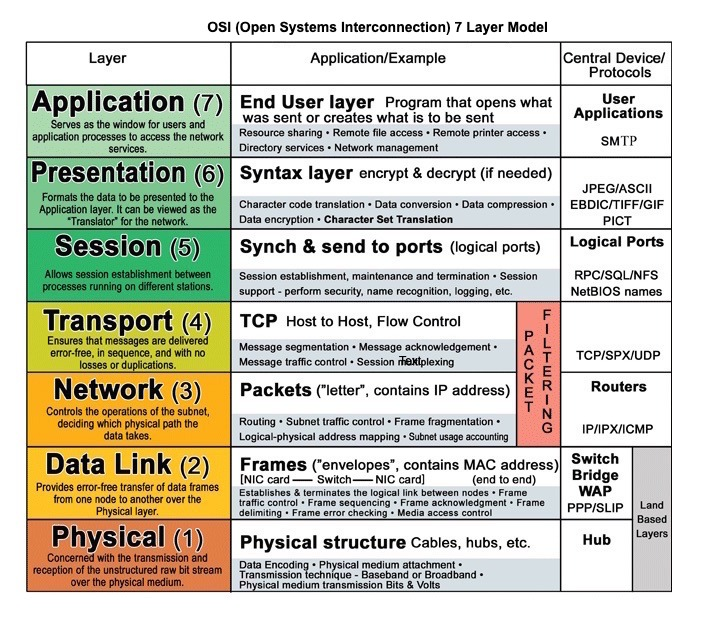
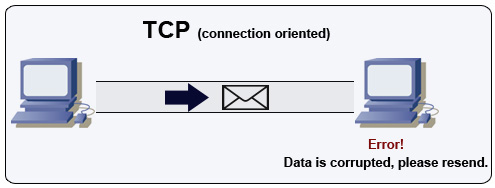
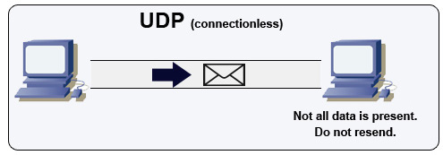
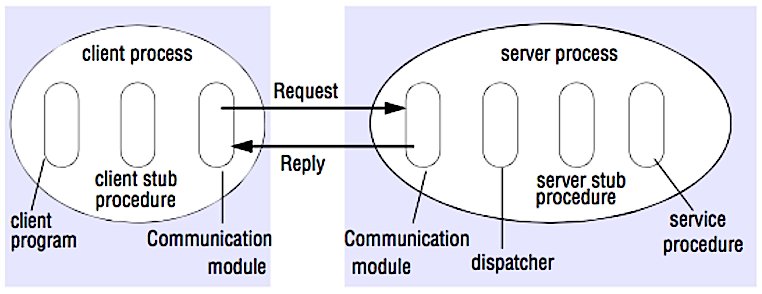

Communication

Source: OSI 7 layer model
Hypertext transfer protocol (HTTP)
HTTP is a method for encoding and transporting data between a client and a server. It is a request/response protocol: clients issue requests and servers issue responses with relevant content and completion status info about the request. HTTP is self-contained, allowing requests and responses to flow through many intermediate routers and servers that perform load balancing, caching, encryption, and compression.
A basic HTTP request consists of a verb (method) and a resource (endpoint). Below are common HTTP verbs:
| Verb | Description | Idempotent | Safe | Cacheable |
|---|---|---|---|---|
| GET | Reads a resource | Yes | Yes | Yes |
| POST | Creates a resource or trigger a process that handles data | No | No | Yes if response contains freshness info |
| PUT | Creates or replace a resource | Yes | No | No |
| PATCH | Partially updates a resource | No | No | Yes if response contains freshness info |
| DELETE | Deletes a resource | Yes | No | No |
Can be called many times without different outcomes.
HTTP is an application layer protocol relying on lower-level protocols such as TCP and UDP.
Source(s) and further reading: HTTP
What is HTTP?
Difference between HTTP and TCP
Difference between PUT and PATCH
Transmission control protocol (TCP)

Source: How to make a multiplayer game
TCP is a connection-oriented protocol over an IP network. Connection is established and terminated using a handshake. All packets sent are guaranteed to reach the destination in the original order and without corruption through:
Sequence numbers and checksum fields for each packet
Acknowledgement) packets and automatic retransmission
If the sender does not receive a correct response, it will resend the packets. If there are multiple timeouts, the connection is dropped. TCP also implements flow control) and congestion control. These guarantees cause delays and generally result in less efficient transmission than UDP.
To ensure high throughput, web servers can keep a large number of TCP connections open, resulting in high memory usage. It can be expensive to have a large number of open connections between web server threads and say, a memcached server. Connection pooling can help in addition to switching to UDP where applicable.
TCP is useful for applications that require high reliability but are less time critical. Some examples include web servers, database info, SMTP, FTP, and SSH.
Use TCP over UDP when:
You need all of the data to arrive intact
You want to automatically make a best estimate use of the network throughput
User datagram protocol (UDP)

Source: How to make a multiplayer game
UDP is connectionless. Datagrams (analogous to packets) are guaranteed only at the datagram level. Datagrams might reach their destination out of order or not at all. UDP does not support congestion control. Without the guarantees that TCP support, UDP is generally more efficient.
UDP can broadcast, sending datagrams to all devices on the subnet. This is useful with DHCP because the client has not yet received an IP address, thus preventing a way for TCP to stream without the IP address.
UDP is less reliable but works well in real time use cases such as VoIP, video chat, streaming, and realtime multiplayer games.
Use UDP over TCP when:
You need the lowest latency
Late data is worse than loss of data
You want to implement your own error correction
Source(s) and further reading: TCP and UDP
Networking for game programming
Key differences between TCP and UDP protocols
Difference between TCP and UDP
Transmission control protocol
User datagram protocol
Scaling memcache at Facebook
Remote procedure call (RPC)

Source: Crack the system design interview
In an RPC, a client causes a procedure to execute on a different address space, usually a remote server. The procedure is coded as if it were a local procedure call, abstracting away the details of how to communicate with the server from the client program. Remote calls are usually slower and less reliable than local calls so it is helpful to distinguish RPC calls from local calls. Popular RPC frameworks include Protobuf, Thrift, and Avro.
RPC is a request-response protocol:
Client program - Calls the client stub procedure. The parameters are pushed onto the stack like a local procedure call.
Client stub procedure - Marshals (packs) procedure id and arguments into a request message.
Client communication module - OS sends the message from the client to the server.
Server communication module - OS passes the incoming packets to the server stub procedure.
Server stub procedure - Unmarshalls the results, calls the server procedure matching the procedure id and passes the given arguments.
The server response repeats the steps above in reverse order.
Sample RPC calls:
GET /someoperation?data=anIdPOST /anotheroperation
{
"data":"anId";
"anotherdata": "another value"
}
RPC is focused on exposing behaviors. RPCs are often used for performance reasons with internal communications, as you can hand-craft native calls to better fit your use cases.
Choose a native library (aka SDK) when:
You know your target platform.
You want to control how your "logic" is accessed.
You want to control how error control happens off your library.
Performance and end user experience is your primary concern.
HTTP APIs following REST tend to be used more often for public APIs.
Disadvantage(s): RPC
RPC clients become tightly coupled to the service implementation.
A new API must be defined for every new operation or use case.
It can be difficult to debug RPC.
You might not be able to leverage existing technologies out of the box. For example, it might require additional effort to ensure RPC calls are properly cached on caching servers such as Squid.
Representational state transfer (REST)
REST is an architectural style enforcing a client/server model where the client acts on a set of resources managed by the server. The server provides a representation of resources and actions that can either manipulate or get a new representation of resources. All communication must be stateless and cacheable.
There are four qualities of a RESTful interface:
Identify resources (URI in HTTP) - use the same URI regardless of any operation.
Change with representations (Verbs in HTTP) - use verbs, headers, and body.
Self-descriptive error message (status response in HTTP) - Use status codes, don't reinvent the wheel.
HATEOAS (HTML interface for HTTP) - your web service should be fully accessible in a browser.
Sample REST calls:
GET /someresources/anIdPUT /someresources/anId
{"anotherdata": "another value"}
REST is focused on exposing data. It minimizes the coupling between client/server and is often used for public HTTP APIs. REST uses a more generic and uniform method of exposing resources through URIs, representation through headers, and actions through verbs such as GET, POST, PUT, DELETE, and PATCH. Being stateless, REST is great for horizontal scaling and partitioning.
Disadvantage(s): REST
With REST being focused on exposing data, it might not be a good fit if resources are not naturally organized or accessed in a simple hierarchy. For example, returning all updated records from the past hour matching a particular set of events is not easily expressed as a path. With REST, it is likely to be implemented with a combination of URI path, query parameters, and possibly the request body.
REST typically relies on a few verbs (GET, POST, PUT, DELETE, and PATCH) which sometimes doesn't fit your use case. For example, moving expired documents to the archive folder might not cleanly fit within these verbs.
Fetching complicated resources with nested hierarchies requires multiple round trips between the client and server to render single views, e.g. fetching content of a blog entry and the comments on that entry. For mobile applications operating in variable network conditions, these multiple roundtrips are highly undesirable.
Over time, more fields might be added to an API response and older clients will receive all new data fields, even those that they do not need, as a result, it bloats the payload size and leads to larger latencies.
RPC and REST calls comparison
| Operation | RPC | REST |
|---|---|---|
| Signup | POST /signup | POST /persons |
| Resign | POST /resign
{
"personid": "1234"
} | DELETE /persons/1234 |
| Read a person | GET /readPerson?personid=1234 | GET /persons/1234 |
| Read a person’s items list | GET /readUsersItemsList?personid=1234 | GET /persons/1234/items |
| Add an item to a person’s items | POST /addItemToUsersItemsList
{
"personid": "1234";
"itemid": "456"
} | POST /persons/1234/items
{
"itemid": "456"
} |
| Update an item | POST /modifyItem
{
"itemid": "456";
"key": "value"
} | PUT /items/456
{
"key": "value"
} |
| Delete an item | POST /removeItem
{
"itemid": "456"
} | DELETE /items/456 |
Source: Do you really know why you prefer REST over RPC
Source(s) and further reading: REST and RPC
Do you really know why you prefer REST over RPC
When are RPC-ish approaches more appropriate than REST?
REST vs JSON-RPC
Debunking the myths of RPC and REST
What are the drawbacks of using REST
Crack the system design interview
Thrift
Why REST for internal use and not RPC